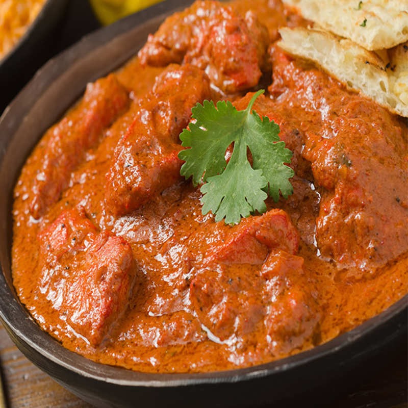

Chicken Tikka Masala

About
Chicken tikka masala is a dish consisting of roasted marinated chicken chunks (chicken tikka) in a spiced sauce. The sauce is usually creamy and orange-coloured. The dish was first offered by British cooks of south Asian origin and subsequently gained popularity at restaurants around the world.
Ingredients
- 500 gm chicken thighs
- 4 cloves diced garlic
- 1/2 teaspoon ginger paste
- 1 tablespoon garam masala powder
- 1/4 cup heavy cream
- 1/2 tablespoon virgin olive oil
- 1/2 sliced onion
- 2 tablespoon tomato puree
- 2 chopped tomato
For Marination
- 1/4 cup yoghurt (curd)
- 1/2 teaspoon cumin powder
- 1/2 teaspoon coriander powder
- 1/2 teaspoon turmeric
- 1/2 teaspoon red chilli powder
For Garnishing
Steps
- This delicious Chicken Tikka Masala needs no introduction. It might look difficult to prepare, but it is very simple to make and we are sure if you follow these simple steps you can prepare it at home and boost your culinary skills. Wash and clean the chicken pieces. Cut the chicken thighs in medium size pieces in a shallow dish. Take a bowl and then add curd, turmeric powder, cumin powder, 1 tsp of chilli and coriander powder. Marinate the chicken pieces and keep in the refrigerator for 6-8 hours so that all the flavours are soaked in. For a perfect Chicken Tikka Masala, the chicken pieces need to be well marinated.
- Now, broil the marinated chicken in the oven until it is crisp and brown from both sides, alternatively you can grill or pan roast/fry the chicken pieces. Once done, heat oil in a pan over moderate flame. Saute garlic, ginger paste, onions, tomatoes and tomato puree. Then add garam masala,1 tsp chilli powder and 1 tsp coriander powder. Stir well.
- Saute the ingredients until the oil starts separating from the mixture. Add heavy cream and simmer for 5 mins until the sauce is thickened. Add the broiled chicken pieces to the sauce. Simmer for another 5-6 minutes until chicken is mixed with the sauce.
- Once done, transfer the dish to a serving bowl and garnish with fresh mint leaves. With rich tomato gravy and tandoori flavours, this chicken recipe goes really well with the bread of all kinds such as naans, rumali rotis and even tandoori chapatis.
- Use chicken thighs for flavour and succulence. Marinate it properly because the longer you marinate the chicken meat, the better it tastes. Make sure the spices you use are fresh and aren't too old. When you are finished making the recipe, season with Garam masala for delicious taste. 3. Use ghee or butter for the richness of flavour. Grill your meat because it is evenly charred and tender than others.
Thanks For Visiting!!